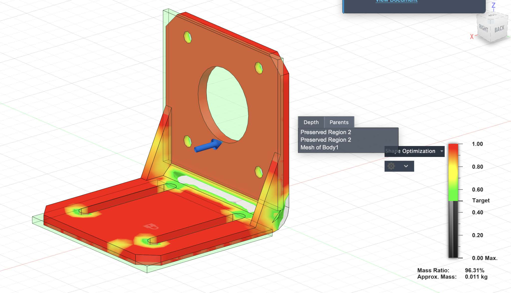

Topology Optimization & Pareto Frontiers
Multi-Objective Design, SIMP Method, Algorithmic Trade-offs
- What I built: A Topology Optimization solver combining the SIMP method with Multi-Objective analysis.
- Why it matters: Real-world engineering requires balancing conflicting goals (e.g., Mass vs. Stiffness) rather than satisfying a single constraint.
- Proof: Generated the Pareto Frontier for bridge designs, identifying optimal mass-compliance trade-offs.
Problem / Goal
Engineering design often involves balancing conflicting goals—for example, a bridge should be as light as possible (low mass) but also as stiff as possible (low compliance).
This project explores computational methods to automate this tradeoff, combining Topology Optimization to generate efficient shapes and Multi-Objective Optimization to navigate the design space and find the optimal set of compromises.
My Contribution
I implemented a complete optimization pipeline from scratch:
- Topology Optimizer: Built a solver using the SIMP (Solid Isotropic Material with Penalization) method to "carve" optimal shapes from a block.
- Optimality Criteria: Implemented the update logic with sensitivity analysis to iteratively improve the density distribution.
- Pareto Analysis: Developed an efficient O(N log N) sweep-line algorithm to identify non-dominated solutions (Pareto Frontier) from thousands of design variants.
Technical Approach
1. Generating Efficient Shapes (SIMP)
The core update logic uses an Optimality Criteria (OC) method to adjust material densities based on sensitivity analysis. It iteratively redistributes material to regions where it contributes most to stiffness.
def optimality_criteria(self, s, fraction, change_limit):
""" Update density field based on sensitivity 's' """
l1, l2 = 0.0, 1.0e15 # Lagrange multipliers for volume constraint
# Bisection search to find lambda that satisfies the volume constraint
while (l2 - l1) / (l1 + l2 + 1e-10) > 1e-3:
l_mid = 0.5 * (l1 + l2)
# B_e = s / lambda_mid
# New density = old_density * sqrt(B_e) (heuristic update)
d_new = self.density * np.sqrt(s / (l_mid + 1e-10))
# Apply move limits and clamp between 0 and 1...2. Exploring the Trade-offs (Pareto Frontier)
Once we can generate optimal shapes, distinguishing the "best" ones requires analyzing trade-offs. I implemented a sweep-line algorithm to find the Pareto Frontier—the set of "non-dominated" solutions where you cannot improve one metric without sacrificing the other.
def pareto_front(points):
""" Find non-dominated points in O(N log N) """
# 1. Sort by X-coordinate (primary objective)
sorted_indices = np.lexsort((points[:, 1], points[:, 0]))
sorted_points = points[sorted_indices]
pareto_points = []
min_y = float("inf")
# 2. Sweep: Keep point only if its Y is better than all previous seen
for point in sorted_points:
if point[1] < min_y:
pareto_points.append(point)
min_y = point[1]
return np.array(pareto_points)